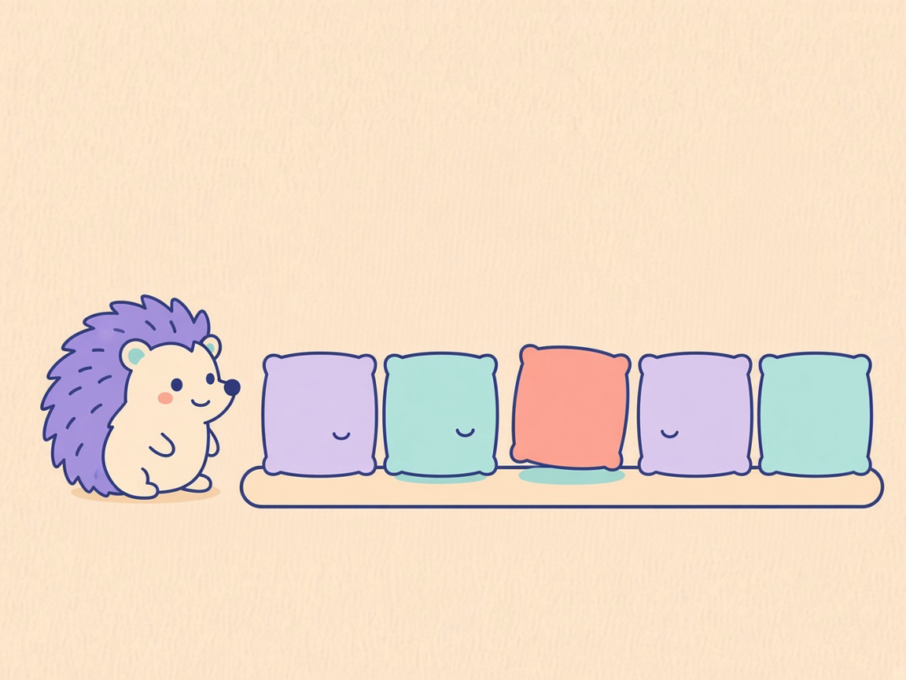

01 / Kacheln

Deutsch
Ein stiller Gast
Ich sehe nur die Nutzung.
Der Gast merkt, welche Kacheln genutzt werden, und nennt sie nicht.
English
A quiet guest
I only see the use.
The guest notices which tiles are used, and does not name them.